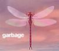
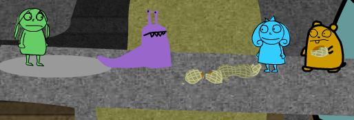

Just wanted to let you know, I'm still alive. I've just been busy...term papers, scholarship applications, etc.
You'll be happy to know I just watched Inuyasha. Maybe I'll Inuyasha-icon you all sometime this week...couldn't do it last week, since, you know, I had the whole Inuyasha picture thing going on. I'm a freak...
So, I'll go to bed...busy day tomorrow, but I'll celebrate getting things done by making chicken. How about that :-D

I'm feeling much better today than I was feeling a week ago at this time. I came home last week from school and did NOTHING and felt absolutly horrible about it. Today, I went to class (despite a mild but still annoying bout of cough-due-to-cold), I attempted to finish up my scholarship packet, tried to make some deposits, and I made a flyer for the Lambda office. Look for my majestic blue beauties around campus. Well, I'm doing laundry now and I'm cleaning the kitchen in anticipation of chicken tonight :-p
My high school friend Natasha told me about this party she's throwing Friday. I think I'm going to try to go. Might be fun. Maybe I should go out tomorrow night :-/ Seems so unappealing lately, I've done all of it before, but I suppose if I scored some good company, I would reconsider.
Missy and I are cementing plans for Spring Break. Looks like we'll be going around random parts of Florida. I'm going to call my cousin today about staying at her place in Sarasota. After that, I think we're going to go to Key West. I haven't been there every since I was a little boy, I can't wait. I remember my uncle putting me on his shoulders while we walked through a sand bar near the beach. I was afraid I'd step on a crab or a lobster...still kind of am. You know they're everywhere...
Um, I just don't know what else to say. I guess I'll share ammusing alcoholism story from Friday. Sonya brought some delicious Bacardi to Mary Kate's party. I found some ginger-ale in MK's fridge and proceeded to mix copious amounts of rum with some modest amount of soft drink beverage. Needless to say, each sip was gag-a-rific, and we were on our way out the door. As anyone knows from my parties (most notably my birthday) I'm rarely guilty of wasting my alcoholic drinks, so on our way out to the car I chugged the rum and ginger-ale, and URR... I was spitting and coughing and making Jerm VERY nervous about a short trip to IHOP. Needless to say, IHOP was a drunken little joy. Gee, I love hoofin' down French toast and hash browns at 3 in the morning :-)
Anyways, back to studiousness. I'll be around if you want to talk.

New episode of MAKING FIENDS! Yup yup, Matt's first reaction was, "That was really bad." I'll let you be the judge.
In other big news, I'm getting rid of my car this weekend. DID YOU HEAR THAT!!! The end of the Shit-mobile. In a twist of fate, a circumstance that I think is absolutely brilliant, my dad will be taking the final trip in the car from hell. I'm happy to know that when the wheel falls off, my dad will get to sit at the side of the road, helpless, instead of me. You know, I'd be the first one down there to pick him off to road, but, you know, I Don't Have A Car. Maybe if I pettle REAL hard, and learn to care just a LITTLE more...no, still wouldn't be enough.
Tomorrow's the office anniversary. I have to do office anniversary things for the rest of the evening, but after that, I'm through! I mean, in a substantive sense, my focus will shift to Matt or whomever desires my position. Also, I will be all involved in transition and making sure next year's board is all prepared for the hours upon hours of stress, boredom, meaningless bickering, soul-stealing pety politics, and other painful things...maybe some actual torture. I consider scheduling for the Lambda office to be some sort of torture. Right next to tickling ;-)
Ok, focus. Focus...

April got her wall scroll today, and I got a random present too...Peeps Lights.
...
I know, random.
So I have to call Natasha tomorrow because I'M GOIN' TO A PARTY! I'm supposed to call Rachel drunk, and I intend too! I'm going to show her that since she's entered the world of cell phones, she will be constantly visited by my familiar number. Well, this party should be fun...random straight people. I want to spend time with Missy, and also Parker. I invited him because he has an affliction for some ol' high school buddies of mine that had better be attending. Yay for familiar afflictions! 8-)
I'm tired, I think I should go to bed. When I woke up this morning, it was way too bright. The sun shouldn't shine so much, I think I'm allergic.
Before I go, I'd just like to note that I think I enjoy garbage songs better in the front seat of my car instead of the reclining seat of my computer desk. "Trip My Wire" just ain't trippin' my wire these days...oh, I can't wait to go down 316 again...I hope they still speed...ahhhhhh...
"One by one, ticking time bombs won
It's not the secrets of the government
That's keeping you dumb
Oh, it's the other way around - wait
What's that sound?
One by one, baby, here they come..."
"The End Has No End"
The Strokes

No more car. Expect a commemorative website at some point. Maybe when I'm a bit more driven (even though obviously not as "driven" as I was before I lost the car, but we all expected that).
I drove around in Missy's convertible today. It was incredibly freeing, I felt alone in a good way. Wind through my shaggy hair, I only wish I had some better music to listen to. I wanted to go somewhere, maybe to the store, maybe to the mall...but I really didn't have anywhere I needed to be or any place I really wanted to go. I walked two blocks in Athens, decided I'd rather cut my hair next week, then I dropped off Missy's car had some Robin's Eggs, and then I went home.
In other news, I'm downloading Japanese songs...I like them alot. Doubt I can ever sing along though...
It would be nice to be surprised at some point, but I fear I'll just have to deal with things that just never change. Perhaps I'm doomed to be unhappy, if for just the next few hours. I'm never really one to squat like some people, so I guess i've got that going for me.
For now, I wish I had a bottle of vodka and a friend. I think I could work with those...